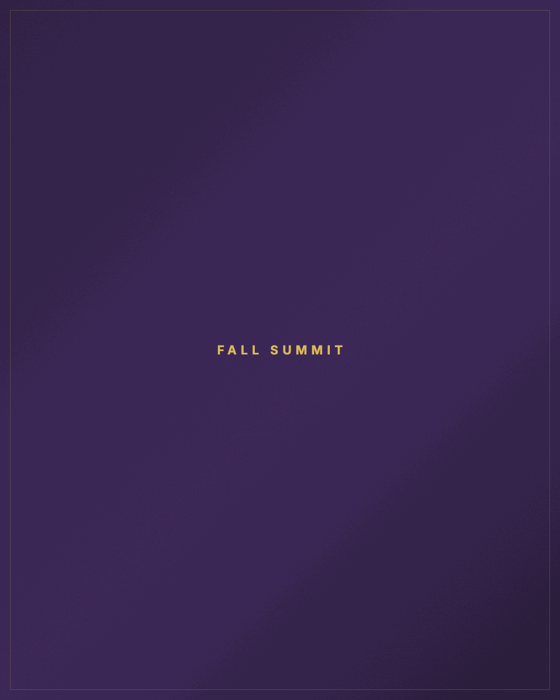
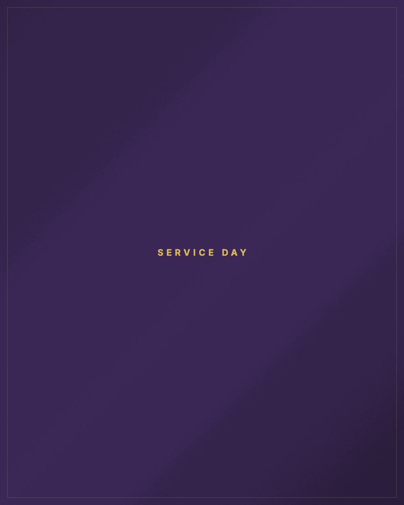
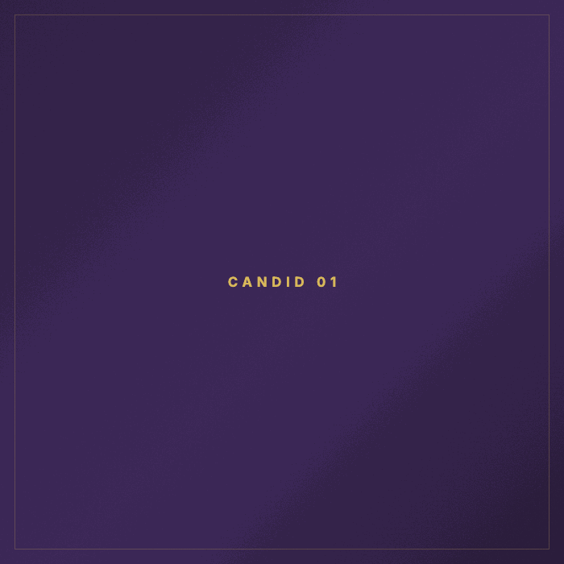
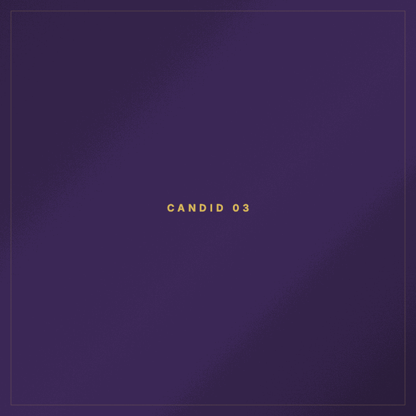
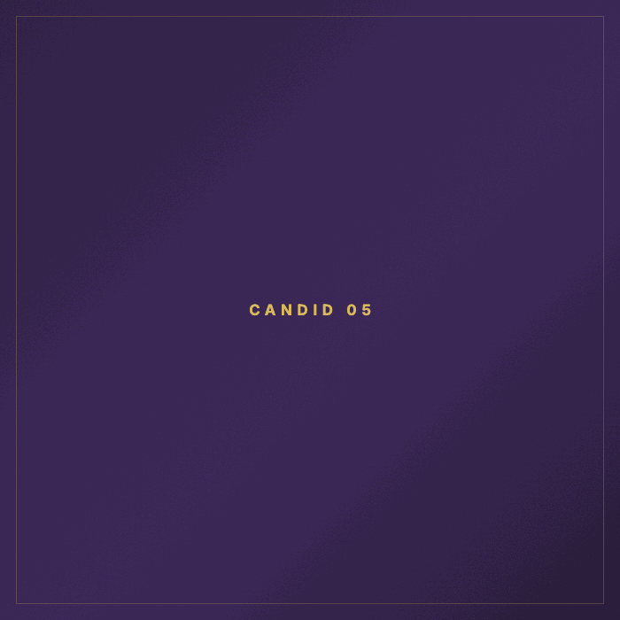
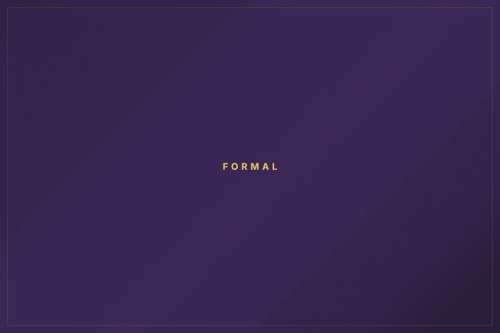
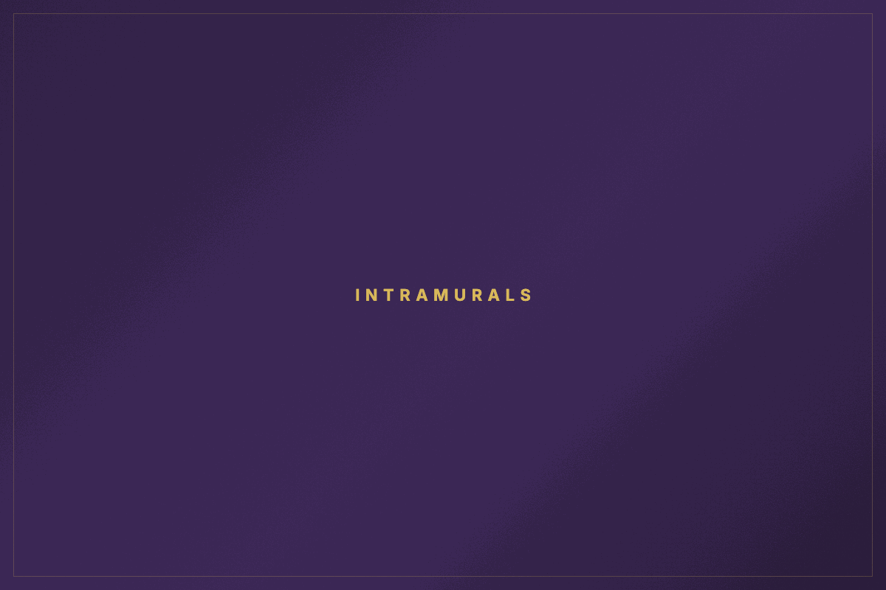
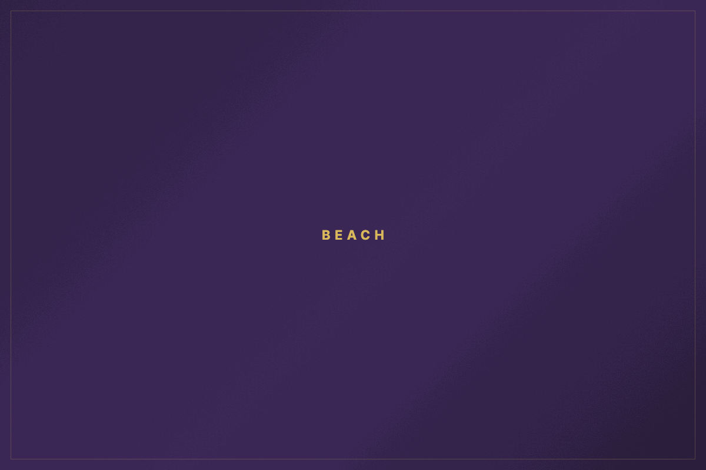
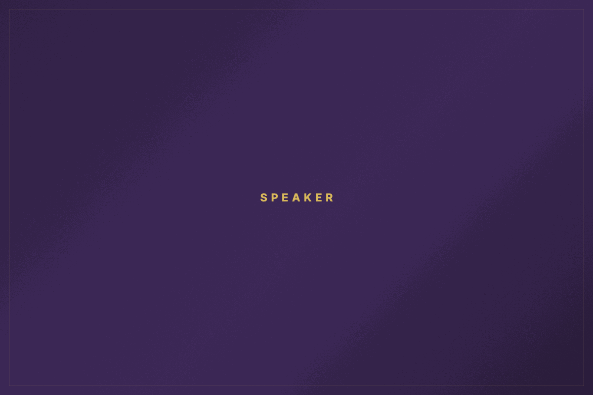

Phi Chi Theta
University of South Florida
Career preparation, leadership, and a business network before you graduate.
Professional Business Fraternity
Scroll
Founded 1924
Graduate confident.
Four years of practice before it counts. You leave with a resume that holds up, a record of leading real work, and people who answer.



Formal
Retreat

Intramurals
Service day

Bid nightNumbers don’t lie.
95%
Members placed in internships or full-time roles
3.60
Chapter average GPA
15
“25 Under 25” honorees
Where members have placed
- Goldman Sachs
- Morgan Stanley
- Citi
- Wells Fargo
- PNC
- Raymond James
- Fisher Investments
- S&P Global
- KPMG
- Deloitte
- PwC
- Amazon
- Nestlé
- Unilever
- NBCUniversal
- Lockheed Martin
- Victoria’s Secret
- Formula 1
- New York Jets
- USF
PCT in real life.
One academic year in eight photographs.
-

Fall Formal -
Spring Retreat -
Fall Summit -
Service day -

Intramurals -

Beach day -

Guest speaker -
The chapter
Your path starts here.
Meet the chapter and see whether PCT belongs in your college experience.